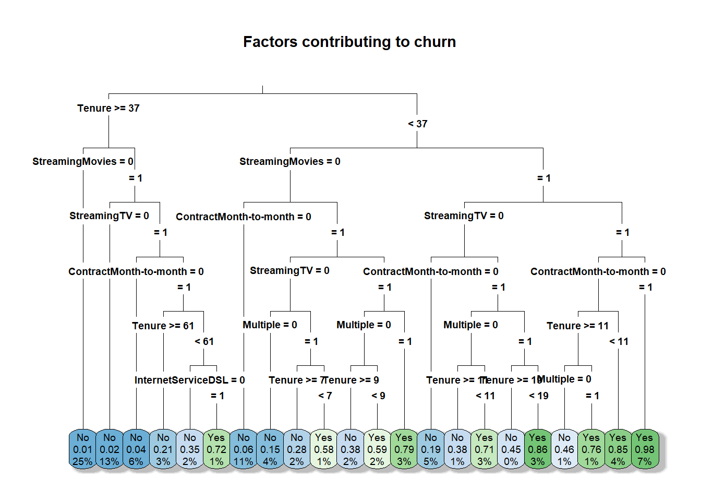

A1: Can a decision tree model effectively predict customer churn based on certain service and customer characteristics?
A2: The goal is to build a highly accurate decision tree model that will help company executives identify and address customers who are at risk of churn and implement retention efforts.
Part II: Method Justification
B1: Decision trees work by repeatedly splitting the data based on the most important features at each step. This results in a tree like structure where each ‘branch’ represents a decision path leading to a churn prediction that is displayed in ‘leaves’ or ‘nodes.’ (Navlani 2024)
The model will highlight the important factors impacting churn and display the binary churn prediction value of a customer in a way that’s easy for non-technical executive to interpret.
B2: Decision trees assume that, in this case, customer churn can be predicted by splitting the data into smaller groups based on important features. In this model I use a combination of services and demographics, so each split should help separate customers who are likely to churn and customers who are not.
B3: The packages I used are as follows:
tidyverse: For cleaning and preparing the data
caret: For model evaluation with a confusion matrix and accuracy calculation.
rpart: Used to build the model itself.
rpart.plot: Used for visualizing the model as a tree structure.
Part III: Data Preparation
C1: One pre-processing goal was to use one-hot encoding on the categorical variables that have multiple unique values. This is important because the categorical variables I’m using in this model have multiple unique values that have no inherent order. So using one-hot encoding to create dummy variables ensures that the model will treat each of these variables equally.
C2: I chose to use the same variables I used in task 1 because these variables all had a statistically significant p-value. The variables included in this model consist of 11 categorical variables, 18 if you take into account the dummy variables, and one numeric variable.
Churn is my dependent variable and it is a binary categorical variable. Contract, InternetService, PaymentMethod, Techie, Phone, Multiple, OnlineBackup, DeviceProtection, StreamingTV, and StreamingMovies are all binary categorical variables that have been encoded to 1 and 0 for Yes and No. The remaining Tenure variable is a numeric continuous variable that indicates the months a customer has been receiving services.
C3: I converted the binary categorical variables into 0 and 1. It is important to have these values encoded as numeric because at each split the model makes a mathematical calculation to determine the purity of the node and then chooses the node with the least impurity.
As mentioned earlier, I created dummy variables for the variables that contained more than just two binary values. Dummy variables are essential for these variables because they are not ordinal and need to be treated equally by the model. For example, a customer who has a one year contract should not be ranked better than a customer with two year contract for example. These are two separate non ordinal values that need equal consideration in the decision tree. Once I had the dummy variables created I removed the original dummy variable containers and then merged these values into the churn data.
D4. The cleaned data set will be provided in my task 2 submission files and will be named CLEANED_churn.csv
Part IV: Analysis
D1: The data was split into two random samples with and 80/20 split. 80% to the training dataset that is used to essentially build the model. And 20% into the testing set that is used to validate the model’s performance.
D2: In this analysis I made use of a decision tree classification model to predict customer churn. Without any parameters the model is fairly simple with only a few nodes. Restricing the amount of nodes will also help to prevent overfitting. (Cybiant, 2020) So the following parameters were added to the model.
cp = 0.0005 Setting the cp value to a small number like this increases the model’s complexity. A large cp value will restrict the model’s ability to make splits and would result in a tree with less nodes. In this model the cp value is set to 0.0005 meaning that the model will make a split if it will increase the accuracy by at least 0.0005.
maxdepth = 5 Ensures that the model only has 5 levels. If the model has to many levels it becomes confusing to interpret and prevents over fitting. A maxdepth of 6 for this model returned a complex tree with 21 terminal nodes while not negatively impacting accuracy.
minbucket = 20 Setting the minbucket to 20 ensures that the model has at least 20 observations per node. If the value is set to a small number then each node will be decided on by just a few observations which could lead to overfitting. Likewise, if the value is set too high then the model will essentially return generalized results and miss potentially important patterns. I chose a minbucket value of 20 because higher values and lower values decreased accuracy.
#plot the decision tree (GeeksforGeeks, 2024)rpart.plot(decision_tree,main ="Factors contributing to churn",type =3, fallen.leaves =TRUE, # Put leaves at the bottom of the plotshadow.col ="gray", # Add shadows for better visualizationcex =0.6) # Adjust the size of the text)

D3: The following code is what was used to perform the analysis technique in part D2.
decision_tree <-rpart(Churn ~ ., # creating the tree from the training setdata = training, method ="class",# controls the growth and prevents overfittingcp =0.0005, # limits the complexiit so that the tree is easier to interpret and readmaxdepth =6, # ensures that there are at least 10 observations for every node.minbucket =20)
Part V: Data Summary and Implications
E1: I will only be using accuracy because my model is a classification model (Yes and No), and MSE is primarily for regression models. This model’s accuracy is 87.29% on the test data. A confusion matrix was used to evaluate model performance by comparing the correct predictions and the incorrect predictions. The confusion matrix shows that the model correctly predicted customer churn 87.29% of the time. This is significantly better than the “No Information Rate” of 73.49% in which all customers are classified as non-churn customers.
Confusion Matrix and Statistics
Reference
Prediction No Yes
No 1396 131
Yes 92 369
Accuracy : 0.8878
95% CI : (0.8731, 0.9014)
No Information Rate : 0.7485
P-Value [Acc > NIR] : < 2e-16
Kappa : 0.6941
Mcnemar's Test P-Value : 0.01094
Sensitivity : 0.9382
Specificity : 0.7380
Pos Pred Value : 0.9142
Neg Pred Value : 0.8004
Prevalence : 0.7485
Detection Rate : 0.7022
Detection Prevalence : 0.7681
Balanced Accuracy : 0.8381
'Positive' Class : No
[1] "Accuracy: 0.8878"
E2: This model was able to achieve an 87.29% accuracy when predicting customer churn. The structure of the decision tree model itself shows some of the key factors that influence churn, such as Tenure, StreamingMovies, ContractMonth-to-month and others. This allows the company executives to proactively identify and target customers who are at risk for churn which can greatly increase data informed retention efforts. Additionally, the interpretability of the decision tree makes it easier for stakeholders to understand the reasoning behind the predictions, allowing for more data-driven decision-making.
E3: One main limitation could be found in the depth of the tree. This model only allows for 6 levels. while having less levels does help with interpretability, it could oversimplify some of the relationships and miss some of the patters that could be found in a model with more levels. However, with a more complex model overfitting becomes an issue (Stripe, 2024).
E4: I recommend that the organization take a proactive approach to reducing customer churn by prioritizing the customers identified by this model. The decision tree highlights key factors influencing churn, including tenure (above or below 28 months), contract type, streaming services, multiple services, and DSL internet service. Based on these insights, the company can implement tailored strategies for different customers.
For instance, customers with a tenure between 28 and 49 months may be more likely to stay if offered streaming services and longer contracts. On the other hand, customers with a tenure under 28 months tend to have a high churn rate when subscribed to streaming services—especially when bundled with other services. Most notably, customers with a tenure between 6.5 and 11 months who subscribe to multiple services have an over 80% probability of churning! For this group, simplifying service packages may be a more effective retention strategy.
By implementing these targeted approaches, the company can not only reduce churn but also enhance customer satisfaction by ensuring promotional offers are aligned with each customer’s needs and behaviors.
Part VI: Demonstration
F. My panopto video will be included in the submission files.